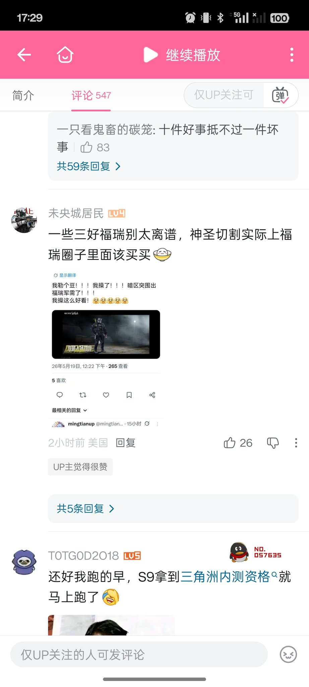

yuer🍥
@yuerQwQ
因此，我建议每一个人都应该挂上8964（

盾盾(=^･ｪ･^=)🍟
@dndn1048476
我服了……你们这群乐子能不能TMD别把推特帖子给截图发墙内，你他妈发墙内是做什么？老子干啥危害国家的事情了吗？老子惹到你了吗？
你不喜欢暗区的军需就不抽就是了，你不打码不问我，直接把我帖子截图发到国内那种烂环境里面放给一群小鬼批斗，你们搞对立有一套，你们人类赢了 https://t.co/Wd9a9adrS7